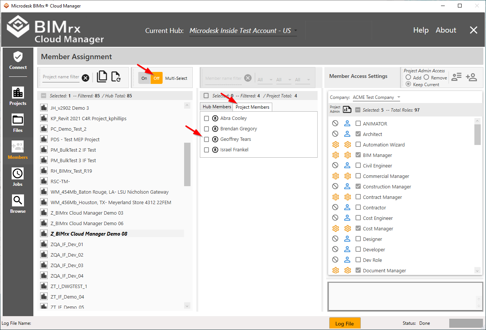
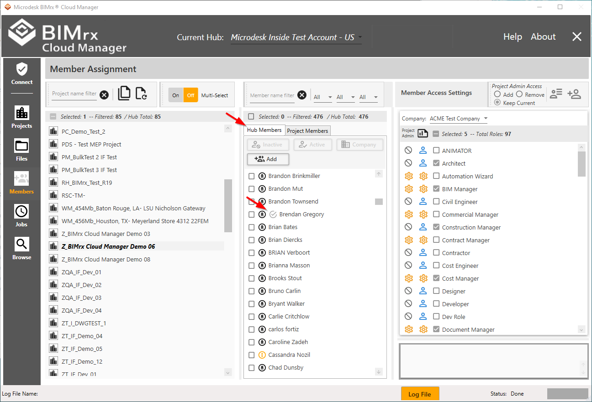
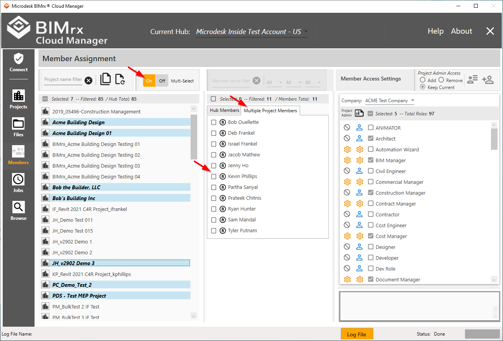
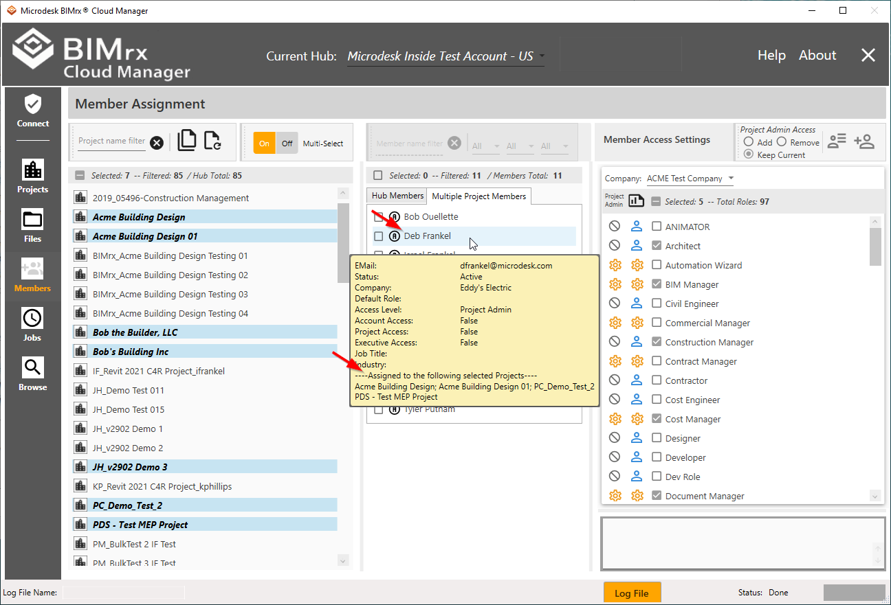
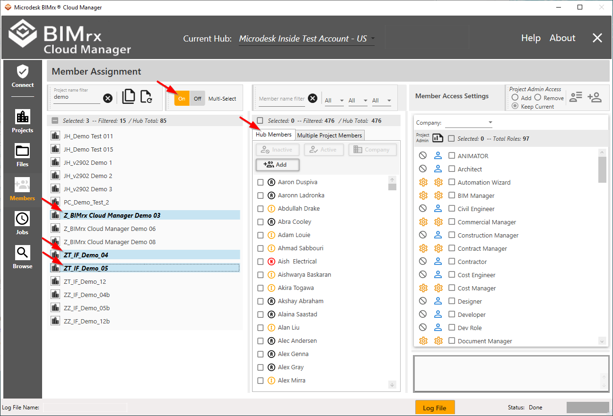
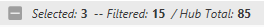
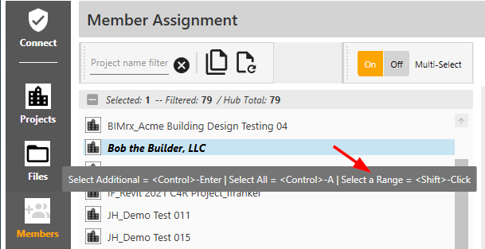
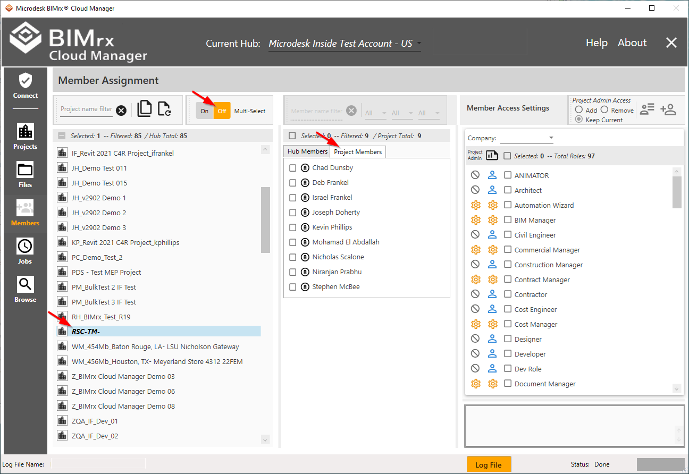

Select Projects
Depending on the user's current task when working with project members, BIMrx® Cloud Manager allows selection of only one—or more than one—project at a time. The main difference between Multi-Select set to On or Off is the display of project members. When Multi-Select is set to Off (i.e., to single project display) it is very easy to quickly see all members for each selected project:

An additional benefit of Single-Project Select mode is the Assigned to Selected Project iconthat displays on the Hub Members list for each member assigned to the selected project.

On the other hand, when in multiple project display mode (Multi-Select = On), the list shown is a consolidated list of all members for all projects selected.

A member only appears on the Multiple Project Members list once, regardless of how many of the selected projects they are members of.

While it is still possible to see the selected projects on which each member appears (above), the information box must be displayed individually for each member.
Tip—User Single Project display for quickly viewing each project's members, but Multiple Project display for quickly updating multiple project members.
Selecting Multiple Projects
When first entering the Members module, all projects for the currently selected Hub are displayed.
If access to another Hub is required, this can be done without leaving the Members module. Select the desired Hub by using the Current Hub dropdown list at the top center of the screen if logged on using an Autodesk® connection. For more information on selecting Hubs, please refer to Autodesk® Connection, above. For changing Hubs when connected using a Custom Connection, refer to Custom Connections, above.
The first step when selecting multiple projects is to make sure the Multi-Select toggle switch is set to On.

Next, click anywhere on a project row to select it. The BIMrx® Cloud Manager user can make additional selections, set a filter, make more selections, remove the filter and display the full list—and all selections will remain in place. For more information on filtering, please refer to the filtering discussion in the Browse Projects module, under Browse Projects Overview.
Also, please note the project totals ribbon.

As projects are selected and filters set and unset, these totals are updated to keep the user advised regarding the current filtering and selection status.
Single project selections are made by clicking anywhere on the row. Click on an unselected row to select it; click on a selected row to unselect it. Selected projects are easily recognized by the bold italics project name and the distinctive highlighted row color displayed when the control has focus.
Multiple projects can be selected by using the following keyboard shortcut keys:
- <Control>-Enter: Add or remove single projects from the current selection list. Click on any project while pressing this key combination—if it was not selected it will become selected and vice-versa.
- <Control>-A: Select all projects matching the current filter. This is typically used in combination with the project filter. At least one project must be selected, however, for this to take effect.
- <Shift>-Click: After clicking on a project, press the <Shift> key then click on a project either below or above the originally selected project. The first and last projects will be selected, along with all projects located between them.
To assist the user in remembering these key combinations, they are displayed on the screen as online help tool-tips. Hover the mouse over any project to produce the following ‘cheat-sheet’:

For more information on selecting projects, please refer to Project Filters and Select All Projects.
Select a Single Project
With Multi-Select set to Off, a single project is selected from the list.

For each project selected, the project members are displayed. Industry Roles and the default company are enabled and available for selection.